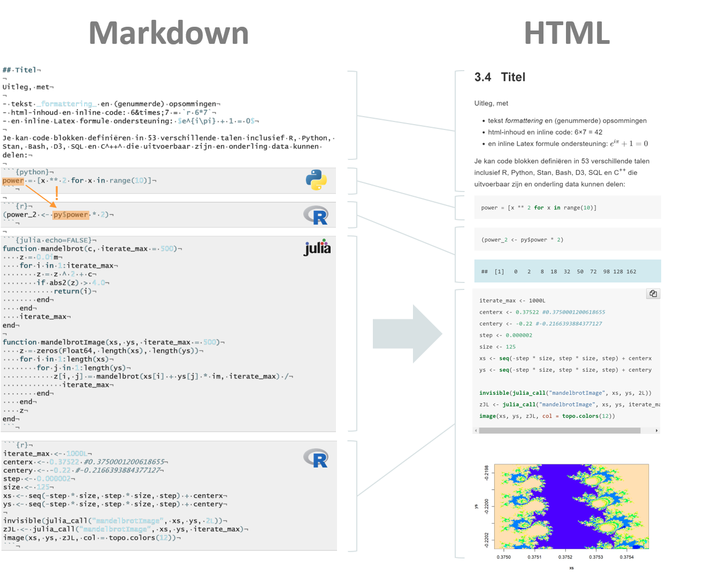
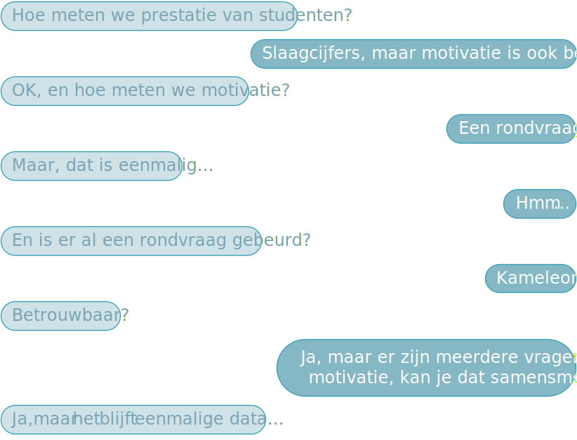

Artificial Intelligence
34149/1928/2021/1/95
Hassan Haddouchi
David D’Haese
Gepubliceerd op 2020-09-22
Euplotes patella, Motic BA310
© 2020 David D’Haese Hassan Haddouchi
Language
The course is in Dutch.
For English summary, go ↓.
Summary
The course Artificial Intelligence which follows on the course AI Principles touches upon some more advanced concepts within AI including neural networks and data visualisation. The student will learn how to analyse a stated problem and develop and deploy an AI-solution end-to-end. In doing so, the student will learn to adopt ethical principles and consider the wishes of the client.
License
The content of this project including its source code is licensed under the GNU Affero General Public v3.0 license.
| You are allowed to… | Under the conditions… | You are not allowed to… |
|---|---|---|
| Commercial use | Disclose source | Liability |
| Distribution | License and copyright notice | Warranty |
| Modification | Network use is distribution | |
| Patent use | Same license | |
| Private use | State changes |
Inleiding tot de cursus
In een notedop
In dit onderdeel leert de student om zelfstandig een AI oplossing te bieden voor een gesteld probleem. De student verruimt zijn of haar competenties met tal van nieuwe ML algoritmen en leert ook om complexe data te visualiseren. Dit alles, binnen een ethisch en klant-vriendelijk kader.
Leerdoelen (1/2)
| Code | Omschrijving |
|---|---|
| TI_LD577 | Beheerst de kunst van data exploratie |
| TI_LD578 | Ontwikkelt zelfstandig een AI toepassing op basis van een probleemstelling |
| TI_LD579 | Rolt een ontwikkelde AI toepassing uit |
| TI_LD580 | Rapporteert op correcte wijze over de onzekerheden van een AI oplossing |
| TI_LD581 | Past de principes toe van Explainable AI |
| TI_LD582 | Beheerst minstens vijf verschillende ML-algoritmen |
| TI_LD583 | Past de regels rond privacy-bescherming en ethical AI toe |
| TI_LD584 | Gebruikt pipelines in een AI oplossing |
Leerdoelen (2/2)
| Code | Omschrijving |
|---|---|
| TI_LD585 | Visualiseert complexe data op correcte en verhelderende wijze |
| TI_LD586 | Past het principe van ensemble learning toe |
| TI_LD587 | Configureert een ML algoritme op correcte wijze op basis van de documentatie |
| TI_LD588 | Bouwt een bibliotheek met meest frequent gebruikte functies |
Cursus vorm
Deze cursus is geschreven in een versie van Markdown.

Navigatie
- Navigeer met de pijlen rechtsonder
- Menu: derde ikoontje linksonder
- Zoom:
Alt + Click - Overzicht:
ESC
Licentie voor deze cursus
De inhoud van deze cursus valt onder een GNU Affero General Public v3.0 licentie. Wat er toegelaten is en onder welke voorwaarden staat hieronder opgesomd:
| Je mag… | Onder voorwaarde dat… | Je mag niet… |
|---|---|---|
| Commercieel gebruik | Ontsluit bron | Aansprakelijk stellen |
| Verspreiden | Licentie en copyright notice mee verspreiden | Garantie |
| Aanpassen | Netwerk verspreiding | |
| Patenteren | Zelfde licentie | |
| Privé gebruiken | Bekendmaking wijzigingen |
Het AI Project
Bij wijze van inleiding, overlopen we nog een aantal concepten uit AI Principles.
We beginnen bij het verloop van een AI project.
Vraag
Wat zijn de stappen binnen een AI project?
Verloop van een AI project (1/3)
We bekijken nog eens de stappen die van tel kunnen zijn tijdens het doorlopen van een reëel AI project:
- Samenstellen team
- Analyse
- Uitvoering
- Rapporteren
- Publiceren
- Opvolgen
Verloop van een AI project (2/3)

Verloop van een AI project (3/3)
In deze cursus zal het de bedoeling zijn om een zo groot mogelijk deel van een AI project te doorlopen, weliswaar zal het gaan om een eenmansteam. Het onderwerp is naar keuze en je zal begeleid worden om een probleemstelling te definiëren.
Project analyse
- Analyse van de probleemstelling
- Scheiden van afhankelijke en onafhankelijke variabelen
- Vastleggen performantie criteria
- Maak beslissingen rond levenscyclus
Project uitvoering
- Verzamelen van datasets
- Filteren, opkuisen en samenvoegen
- Randomiseren
- Trainen leeralgoritme
- Instellen hyperparameters
- Validatie
- Testen
Het AI team
Net als in andere disciplines heb je er voordeel bij om multidisciplinaire teams te maken. Afhankelijk van de probleemstelling en je eigen skills is het goed om eens na te denken over het betrekken van ingenieurs, wiskundigen, ontwikkelaars, data-wetenschappers, bedrijfs analisten, klanten en managers.
Analyse van de probleemstelling
- Is het probleem duidelijk en ondubbelzinnig?
- Gaat het wel om een AI/ML probleem?
- Valt er iets te voorspellen?
- Kan men aannemen dat er een verborgen patroon bestaat?
- Zijn de data beschikbaar?
Scheiden van afhankelijke en onafhankelijke variabelen
Voorbeeld: LAP! project
LAP! project (1/2)

LAP project (2/2)

Vastleggen performantie criteria
Voorbeelden:
We consider the algorithm a success when it can predict tire pressure to within 0.3 PSI, 99.5% of the time
We consider the algorithm a success when it can predict the correct sales figure to within 1%, 95% of the time and with an horizon of 1 month
Kiezen van een onderwerp
Aerospace & Defense · Appliances & Durable Goods · Automobiles & Trucks · Banking & Finance · Childhood Development · Cognitive Science · Commercial Services & Supplies · Construction & Engineering · Consumer Products & Services · Creativity & Intelligence · Education · Electrical Industrial Apparatus · Energy · Engineering & Design · Food & Agriculture · Games · Government · Health & Medicine · Information Technology · Law · Law Enforcement & Public Safety · Leisure & Entertainment · Machinery · Materials · Media · Professional Services · Retail · Semiconductors & Electronics · Shipping · Simulation of Human Behavior · Telecommunications · Textiles, Apparel & Luxury Goods · Transportation · Water & Waste Management
Verzamelen van data
Er zijn tal van bronnen. Laten we er een aantal bekijken…